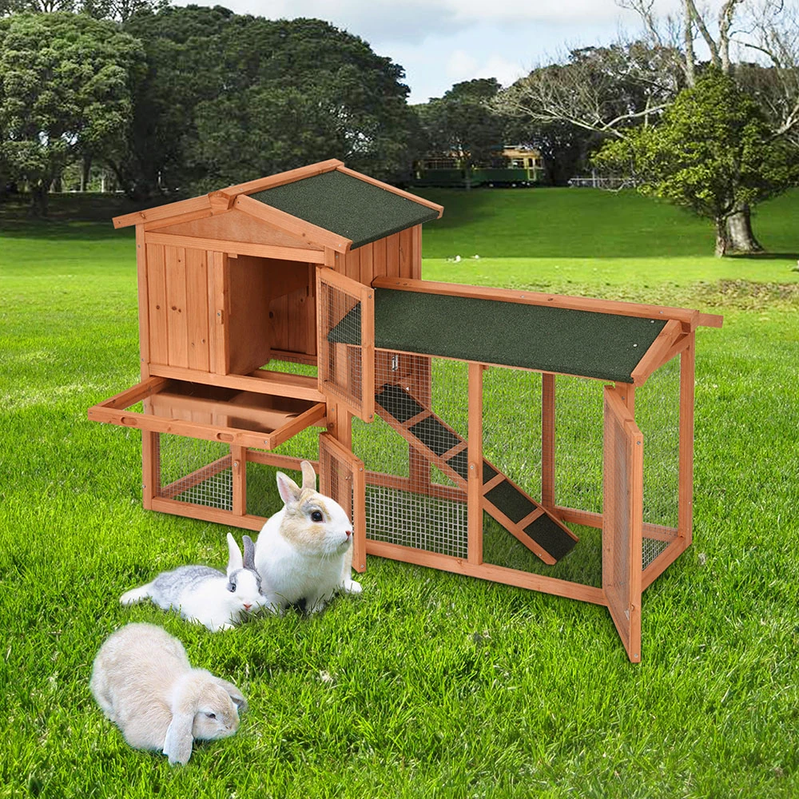
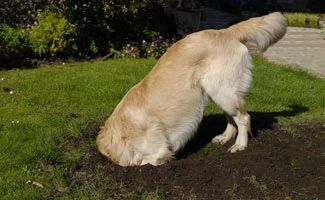

We live in a house with a garden. Our house is number 17. We have a pet dog. Our neighbours live in the house beside ours: at number 19. They have a pet rabbit. They have a rabbit hutch in their garden where their rabbit lives.

There is a fence between their garden and ours. The fence is old.
One day, our dog found a hole in the fence and went into the neighbours' garden. We know he went into the neighbours' garden, because he came back with the rabbit. The rabbit was dead. It was very dirty. It was covered in black earth.
The neighbours were not at home. I washed the dead rabbit and used a hair-dryer to make its fur clean and soft. I went into the neighbours' garden, opened the door of the rabbit hutch and put the dead rabbit inside. I hoped that the neighbours' would not think that our dog had killed the rabbit.
Late that evening, the doorbell rang. It was the neighbour. He was very excited.
"Something... Something unthinkable has happened!" he said. "Our rabbit is dead."
"Ah?" I said. "I'm sorry to hear that."
"But listen!" my neighbour said. "Our rabbit died two days ago. We dug a hole in the garden, and buried it."
"Ahh!" I said. "I didn't know that."
"And today... Oh, it is so incredible..." my neighbour said. "The hole in the garden is open again, and ... you won't imagine what has happened!"
"Ahhh!" I said "The rabbit is alive again?"
"No. No, it's still dead," said my neighbour. "But it is lying in its hutch, looking so calm and peaceful. Can you believe that?"
